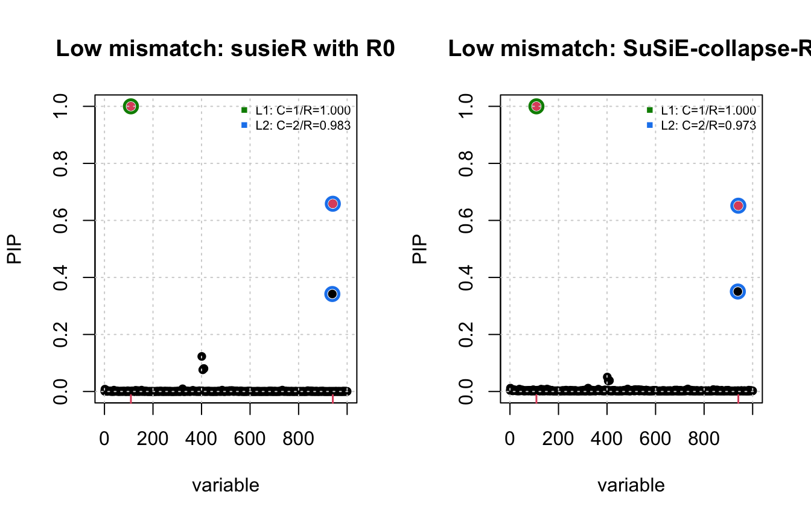
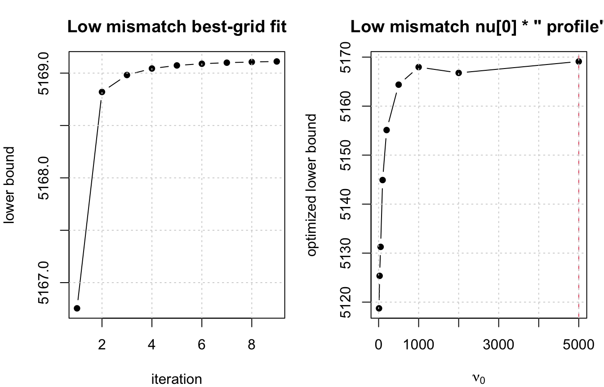
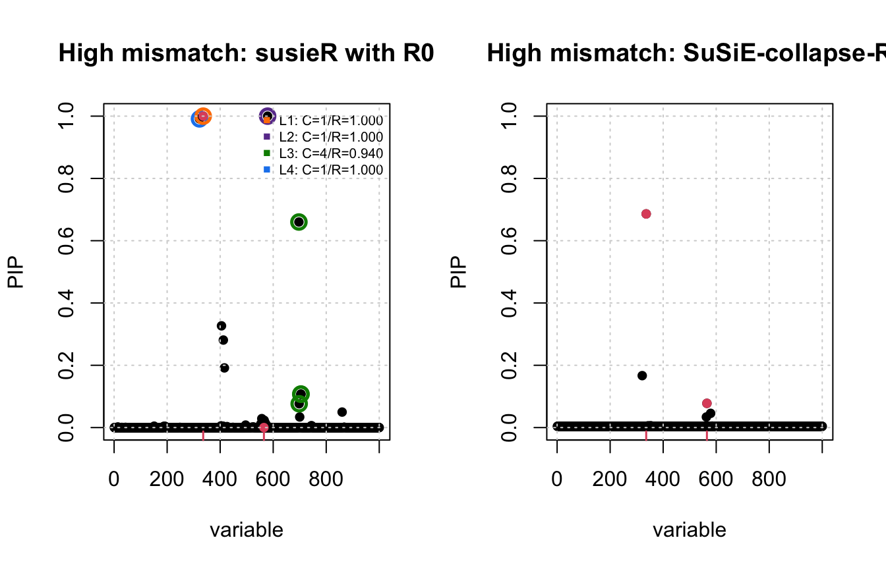
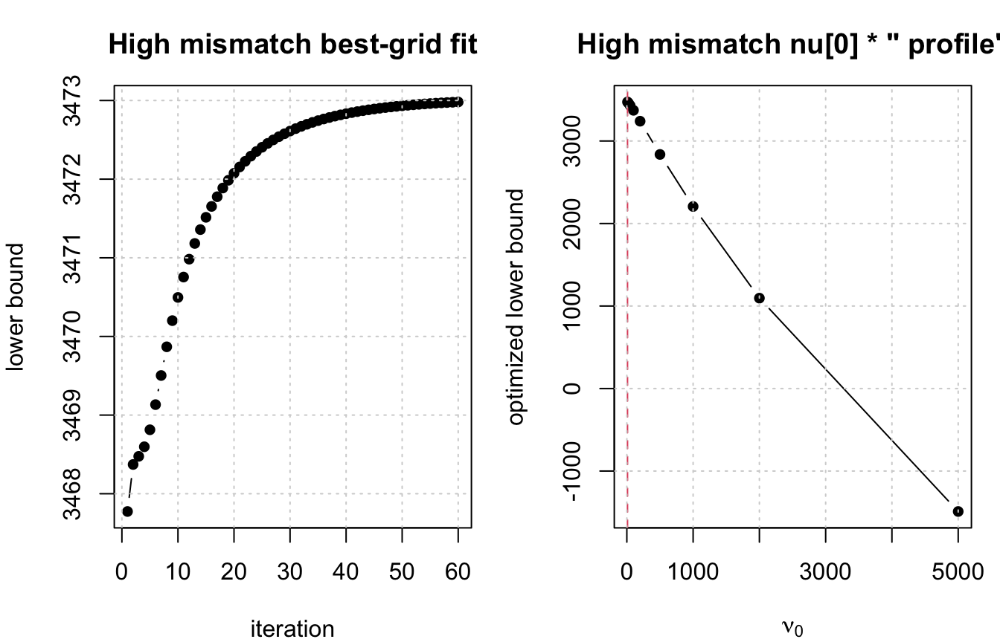
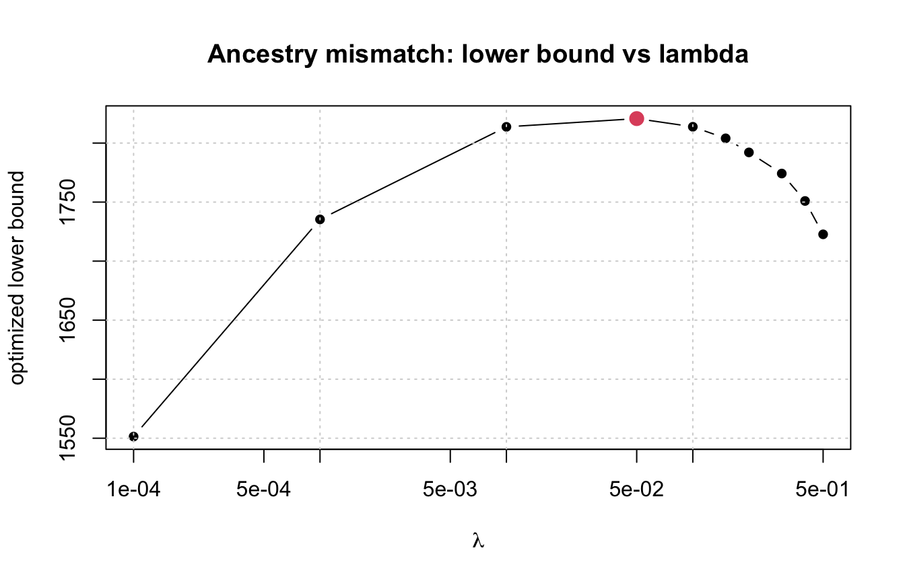
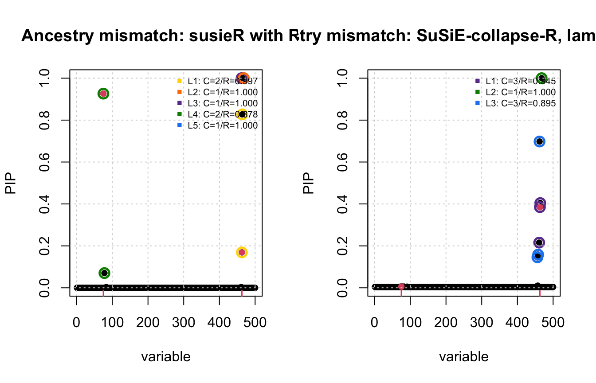
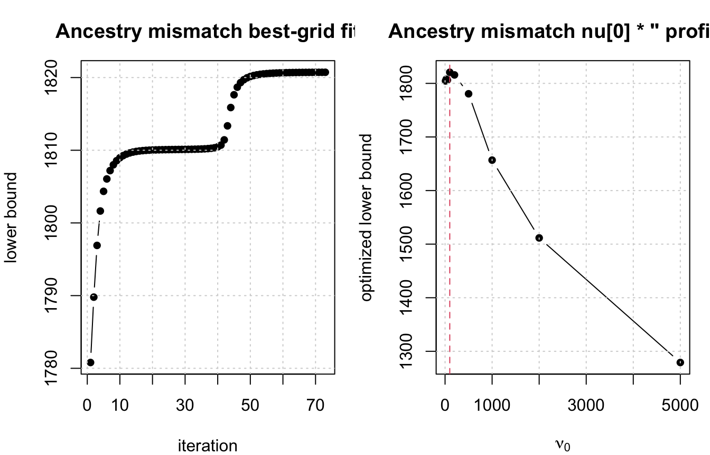

Last updated: 2026-07-01
Checks: 6 1
Knit directory: susie-relax/
This reproducible R Markdown analysis was created with workflowr (version 1.7.2). The Checks tab describes the reproducibility checks that were applied when the results were created. The Past versions tab lists the development history.
The R Markdown is untracked by Git. To know which version of the R
Markdown file created these results, you’ll want to first commit it to
the Git repo. If you’re still working on the analysis, you can ignore
this warning. When you’re finished, you can run
wflow_publish to commit the R Markdown file and build the
HTML.
Great job! The global environment was empty. Objects defined in the global environment can affect the analysis in your R Markdown file in unknown ways. For reproduciblity it’s best to always run the code in an empty environment.
The command set.seed(20260621) was run prior to running
the code in the R Markdown file. Setting a seed ensures that any results
that rely on randomness, e.g. subsampling or permutations, are
reproducible.
Great job! Recording the operating system, R version, and package versions is critical for reproducibility.
Nice! There were no cached chunks for this analysis, so you can be confident that you successfully produced the results during this run.
Great job! Using relative paths to the files within your workflowr project makes it easier to run your code on other machines.
Great! You are using Git for version control. Tracking code development and connecting the code version to the results is critical for reproducibility.
The results in this page were generated with repository version 6e0cefb. See the Past versions tab to see a history of the changes made to the R Markdown and HTML files.
Note that you need to be careful to ensure that all relevant files for
the analysis have been committed to Git prior to generating the results
(you can use wflow_publish or
wflow_git_commit). workflowr only checks the R Markdown
file, but you know if there are other scripts or data files that it
depends on. Below is the status of the Git repository when the results
were generated:
Ignored files:
Ignored: .DS_Store
Ignored: .Rhistory
Ignored: .Rproj.user/
Ignored: analysis/.DS_Store
Ignored: analysis/ser-relax-vs-model-b-pip.html
Ignored: code/.Rhistory
Untracked files:
Untracked: analysis/SER-collapse-R-demonstrate.Rmd
Untracked: analysis/SuSiE-collapse-R-shared-omega-demonstrate.Rmd
Untracked: code/SER-collapse-R.R
Untracked: code/SuSiE-collapse-R-shared-omega.R
Untracked: collapse-R-approach.aux
Untracked: collapse-R-approach.fdb_latexmk
Untracked: collapse-R-approach.fls
Untracked: collapse-R-approach.log
Untracked: collapse-R-approach.pdf
Untracked: tex/collapse-R-approach.aux
Untracked: tex/collapse-R-approach.log
Untracked: tex/collapse-R-approach.pdf
Untracked: tex/collapse-R-approach.synctex.gz
Untracked: tex/collapse-R-approach.tex
Unstaged changes:
Modified: analysis/choose-lambda-diff-ancestry.Rmd
Modified: analysis/index.Rmd
Modified: analysis/susie-relax-demonstrate.Rmd
Note that any generated files, e.g. HTML, png, CSS, etc., are not included in this status report because it is ok for generated content to have uncommitted changes.
There are no past versions. Publish this analysis with
wflow_publish() to start tracking its development.
knitr::opts_chunk$set(
echo = TRUE,
message = FALSE,
warning = FALSE,
fig.width = 7,
fig.height = 4.5
)
library(susieR)
source("code/SuSiE-collapse-R-shared-omega.R")
source("code/sim_2pop.R")
source("code/plot.R")This page repeats the main analysis in
analysis/susie-relax-demonstrate.Rmd, replacing
fit_susie_relax() with the collapsed-\(R\) SuSiE fit using one shared \(q(\omega)\):
fit_susie_collapse_r_shared().
The comparison is between:
susieR using the out-of-sample LD matrix \(R_0\);Unlike fit_susie_relax(), the collapsed-\(R\) implementation estimates \(\nu_0\) by profiling over a grid of
candidate values.
standardize_sim <- function(res) {
d <- 1 / sqrt(diag(res$R))
res$v <- d * res$v
res$R <- cov2cor(res$R)
res$R0 <- cov2cor(res$R0)
res
}
make_rbar <- function(R0, lambda = 0.01) {
Rbar <- (1 - lambda) * R0 + lambda * diag(1, ncol(R0))
cov2cor(Rbar)
}
make_cs_from_alpha <- function(alpha, R, coverage = 0.95,
min_abs_corr = 0.5,
min_top_alpha = 1e-4) {
alpha <- as.matrix(alpha)
cs <- list()
purity <- numeric()
for (ell in seq_len(nrow(alpha))) {
a <- as.numeric(alpha[ell, ])
if (max(a) < min_top_alpha) {
next
}
ord <- order(a, decreasing = TRUE)
k <- which(cumsum(a[ord]) >= coverage)[1]
vars <- ord[seq_len(k)]
p <- if (length(vars) == 1) {
1
} else {
R_sub <- abs(R[vars, vars, drop = FALSE])
min(R_sub[upper.tri(R_sub)])
}
if (is.finite(p) && p >= min_abs_corr) {
nm <- paste0("L", ell)
cs[[nm]] <- vars
purity[nm] <- p
}
}
list(cs = cs, purity = purity)
}
summarize_fit <- function(label, alpha, pip, R_for_cs, beta_true,
nu0 = NA_real_, sigma2 = NA_real_) {
alpha <- as.matrix(alpha)
top <- apply(alpha, 1, which.max)
top_alpha <- apply(alpha, 1, max)
cs_info <- make_cs_from_alpha(alpha, R = R_for_cs)
data.frame(
method = label,
selected_L = length(cs_info$cs),
nu0 = nu0,
sigma2 = paste(sprintf("%.4g", sigma2), collapse = ", "),
gamma_hat = paste(top, collapse = ", "),
top_alpha = paste(sprintf("%.3f", top_alpha), collapse = ", "),
causal_pip = paste(sprintf("%.3f", pip[beta_true != 0]), collapse = ", ")
)
}
plot_pip <- function(fit, R_for_cs, beta_true, main) {
susie_plot_alpha(
fit,
R = R_for_cs,
b = beta_true,
main = main,
coverage = 0.95,
min_abs_corr = 0.5
)
grid()
}
plot_collapse_convergence <- function(fit, main_prefix) {
old_par <- par(no.readonly = TRUE)
on.exit(par(old_par), add = TRUE)
par(mfrow = c(1, 2), mar = c(4, 4, 3, 1))
plot(
seq_along(fit$elbo), fit$elbo,
type = "b",
pch = 16,
xlab = "iteration",
ylab = "lower bound",
main = paste(main_prefix, "best-grid fit")
)
grid()
plot(
fit$nu0_grid, fit$grid_lower_bound,
type = "b",
pch = 16,
xlab = expression(nu[0]),
ylab = "optimized lower bound",
main = paste(main_prefix, expression(nu[0] * " profile"))
)
abline(v = fit$nu0, col = 2, lty = 2)
grid()
}
run_case <- function(case_label, N0, seed, N = 20000L, J = 1000L,
lambda = 0.01, L = 5,
nu0_grid = c(10, 25, 50, 100, 200, 500, 1000, 2000, 5000),
collapse_max_iter = 200,
collapse_sigma2 = 0.3^2,
estimate_sigma2 = TRUE) {
res <- sim_2pop(
chrom = "chr22",
start = 20e6,
end = 21e6,
T_split = 20,
n_gwas = N,
n_ref = N0,
J = J,
h2 = 0.01,
seed = seed
)
res <- standardize_sim(res)
v <- res$v
R <- res$R
R0 <- res$R0
Rbar <- make_rbar(R0, lambda = lambda)
beta_true <- res$beta_true
fit_susie_out <- susie_suff_stat(
XtX = N * R0,
Xty = N * v,
n = N,
yty = N,
L = L
)
collapse_fit_time <- system.time({
fit_collapse <- fit_susie_collapse_r_shared(
x = v,
Rbar = Rbar,
N = N,
L = L,
sigma2 = rep(collapse_sigma2, L),
nu0_grid = nu0_grid,
estimate_sigma2 = estimate_sigma2,
max_iter = collapse_max_iter,
tol = 1e-6,
verbose = FALSE
)
})
summary <- rbind(
summarize_fit(
label = "susieR with R0",
alpha = fit_susie_out$alpha,
pip = fit_susie_out$pip,
R_for_cs = R0,
beta_true = beta_true
),
summarize_fit(
label = "SuSiE-collapse-R shared q(omega)",
alpha = fit_collapse$alpha,
pip = fit_collapse$pip,
R_for_cs = Rbar,
beta_true = beta_true,
nu0 = fit_collapse$nu0,
sigma2 = fit_collapse$sigma2
)
)
list(
case_label = case_label,
N = N,
N0 = N0,
seed = seed,
lambda = lambda,
L = L,
v = v,
R = R,
R0 = R0,
Rbar = Rbar,
beta_true = beta_true,
causal = which(beta_true != 0),
fit_susie_out = fit_susie_out,
fit_collapse = fit_collapse,
collapse_fit_time = collapse_fit_time,
summary = summary
)
}Here the reference panel is large. As in the original SuSiE-relax analysis, ordinary SuSiE and the relaxed method should both have an easier problem.
low_case <- run_case(
case_label = "low mismatch",
N0 = 2000L,
seed = 6,
N = 20000L,
J = 1000L,
lambda = 0.01,
L = 5,
collapse_max_iter = 200,
collapse_sigma2 = 0.3^2
)
low_case$collapse_fit_time user system elapsed
0.645 0.024 0.664 low_case$causal[1] 109 941low_case$summary method selected_L nu0
1 susieR with R0 2 NA
2 SuSiE-collapse-R shared q(omega) 2 5000
sigma2 gamma_hat
1 NA 109, 941, 401, 1, 1
2 0.003783, 0.003361, 9.358e-05, 3.227e-05, 3.216e-05 109, 941, 401, 401, 401
top_alpha causal_pip
1 1.000, 0.658, 0.123, 0.001, 0.001 1.000, 0.658
2 1.000, 0.651, 0.037, 0.007, 0.007 1.000, 0.652old_par <- par(no.readonly = TRUE)
par(mfrow = c(1, 2))
plot_pip(
low_case$fit_susie_out,
low_case$R0,
low_case$beta_true,
main = "Low mismatch: susieR with R0"
)
plot_pip(
low_case$fit_collapse,
low_case$Rbar,
low_case$beta_true,
main = "Low mismatch: SuSiE-collapse-R"
)
par(old_par)
plot_collapse_convergence(low_case$fit_collapse, "Low mismatch")
Here the reference panel is small. This repeats the high-mismatch setup from the original page, but fits the collapsed-\(R\) shared-\(\omega\) model.
high_case <- run_case(
case_label = "high mismatch",
N0 = 100L,
seed = 9,
N = 20000L,
J = 1000L,
lambda = 0.01,
L = 5,
collapse_max_iter = 200,
collapse_sigma2 = 0.3^2
)
high_case$collapse_fit_time user system elapsed
0.789 0.022 0.801 high_case$causal[1] 336 565high_case$summary method selected_L nu0
1 susieR with R0 4 NA
2 SuSiE-collapse-R shared q(omega) 0 10
sigma2 gamma_hat
1 NA 336, 579, 697, 322, 405
2 0.005307, 5.006e-06, 4.98e-06, 4.964e-06, 4.952e-06 336, 521, 521, 521, 521
top_alpha causal_pip
1 1.000, 1.000, 0.660, 0.991, 0.327 1.000, 0.000
2 0.685, 0.001, 0.001, 0.001, 0.001 0.686, 0.078old_par <- par(no.readonly = TRUE)
par(mfrow = c(1, 2))
plot_pip(
high_case$fit_susie_out,
high_case$R0,
high_case$beta_true,
main = "High mismatch: susieR with R0"
)
plot_pip(
high_case$fit_collapse,
high_case$Rbar,
high_case$beta_true,
main = "High mismatch: SuSiE-collapse-R"
)
par(old_par)
plot_collapse_convergence(high_case$fit_collapse, "High mismatch")
data.frame(
effect = seq_len(nrow(high_case$fit_collapse$alpha)),
top = apply(high_case$fit_collapse$alpha, 1, which.max),
top_alpha = apply(high_case$fit_collapse$alpha, 1, max)
) effect top top_alpha
effect1 1 336 0.684892062
effect2 2 521 0.001003507
effect3 3 521 0.001003489
effect4 4 521 0.001003478
effect5 5 521 0.001003470sim_asn_eur <- function(chrom, start, end, n_gwas, n_ref, J, h2, seed) {
stdpopsim <- reticulate::import("stdpopsim")
msprime <- reticulate::import("msprime")
set.seed(seed)
species <- stdpopsim$get_species("HomSap")
contig <- species$get_contig(chrom, left = as.integer(start), right = as.integer(end))
demo_model <- species$get_demographic_model("OutOfAfrica_3G09")
demography <- demo_model$model
ts <- msprime$sim_ancestry(
samples = reticulate::dict(CHB = as.integer(n_gwas), CEU = as.integer(n_ref)),
demography = demography,
recombination_rate = contig$recombination_map,
random_seed = as.integer(seed)
)
ts <- msprime$sim_mutations(ts, rate = 1.29e-8, random_seed = as.integer(seed))
chb_id <- NULL
ceu_id <- NULL
for (p in reticulate::iterate(ts$populations())) {
if (!is.null(p$metadata) && p$metadata$name == "CHB") chb_id <- p$id
if (!is.null(p$metadata) && p$metadata$name == "CEU") ceu_id <- p$id
}
samples_gwas <- ts$samples(population = as.integer(chb_id))
samples_ref <- ts$samples(population = as.integer(ceu_id))
G_all <- ts$genotype_matrix()
to_diploid <- function(hap_idx) {
idx <- as.integer(hap_idx) + 1
g_hap <- G_all[, idx, drop = FALSE]
g_dip <- g_hap[, seq(1, ncol(g_hap), by = 2)] +
g_hap[, seq(2, ncol(g_hap), by = 2)]
t(g_dip)
}
G_gwas <- to_diploid(samples_gwas)
G_ref <- to_diploid(samples_ref)
maf_gwas <- colMeans(G_gwas) / 2
maf_ref <- colMeans(G_ref) / 2
common_mask <- (maf_gwas > 0.05) & (maf_gwas < 0.95) &
(maf_ref > 0.05) & (maf_ref < 0.95)
n_common <- sum(common_mask)
if (n_common < J) {
stop(paste0("Only ", n_common, " common variants found but J = ", J,
". Try a larger region."))
}
G_gwas <- G_gwas[, common_mask, drop = FALSE]
G_ref <- G_ref[, common_mask, drop = FALSE]
J_all <- min(ncol(G_gwas), J)
max_start <- J_all - J
start_idx <- if (max_start > 0) sample(0:max_start, 1) else 0
cols_to_keep <- (start_idx + 1):(start_idx + J)
G <- G_gwas[, cols_to_keep, drop = FALSE]
G0 <- G_ref[, cols_to_keep, drop = FALSE]
X <- sweep(G, 2, colMeans(G), "-")
N <- nrow(X)
G0_centered <- sweep(G0, 2, colMeans(G0), "-")
R0 <- stats::cov(G0_centered)
R0[is.na(R0)] <- 0
R <- stats::cov(X)
R[is.na(R)] <- 0
num_causal <- 2
first_causal_SNP <- sample(1:J, 1)
second_causal_SNP <- which.min(R[first_causal_SNP, ]^2)
causal_SNPs_loc <- c(first_causal_SNP, second_causal_SNP)
beta_true <- rep(0, J)
beta_true[causal_SNPs_loc] <- stats::runif(num_causal) + 0.01
var_expl <- sum((X %*% beta_true)^2 / N)
scale <- h2 / var_expl
beta_true <- beta_true * sqrt(scale)
y <- (X %*% beta_true) + sqrt(1 - h2) * stats::rnorm(N)
y_std <- sqrt(sum((y - mean(y))^2) / N)
y <- (y - mean(y)) / y_std
v <- (t(X) %*% y) / N
list(
v = as.vector(v),
R = R,
R0 = R0,
beta_true = beta_true,
causal_SNPs_loc = causal_SNPs_loc
)
}seed <- 4
chrom <- "chr22"
start <- 20e6
end <- 21e6
N <- 25000L
N0 <- 500L
J <- 500L
h2 <- 0.01
res <- sim_asn_eur(
chrom, start, end,
n_gwas = N,
n_ref = N0,
J = J,
h2 = h2,
seed = seed
)
v <- res$v
R <- res$R
R0 <- res$R0
beta_true <- res$beta_true
causal_SNPs_loc <- res$causal_SNPs_loc
d <- 1 / sqrt(diag(R))
v <- d * v
R <- cov2cor(R)
R0 <- cov2cor(R0)
x <- v
L <- 5
lambda_grid <- c(1e-4, 1e-3, 1e-2, 0.05, 0.1, 0.15, 0.2, 0.3, 0.4, 0.5)
nu0_grid <- c(10, 25, 50, 100, 200, 500, 1000, 2000, 5000)
fit_susie_out_asn_eur <- susie_suff_stat(
XtX = N * R0,
Xty = N * x,
n = N,
yty = N,
L = L
)
collapse_fit_time_asn_eur <- system.time({
collapse_lambda_fits <- lapply(lambda_grid, function(lambda) {
fit_susie_collapse_r_shared(
x = x,
Rbar = make_rbar(R0, lambda = lambda),
N = N,
L = L,
sigma2 = rep(0.3^2, L),
nu0_grid = nu0_grid,
estimate_sigma2 = TRUE,
max_iter = 200,
tol = 1e-6,
verbose = FALSE
)
})
})
names(collapse_lambda_fits) <- sprintf("lambda=%g", lambda_grid)
lambda_summary <- do.call(rbind, lapply(seq_along(lambda_grid), function(i) {
fit <- collapse_lambda_fits[[i]]
Rbar_i <- make_rbar(R0, lambda = lambda_grid[i])
data.frame(
lambda = lambda_grid[i],
final_elbo = fit$lower_bound,
nu0 = fit$nu0,
selected_L = length(make_cs_from_alpha(fit$alpha, R = Rbar_i)$cs),
causal_pip = paste(sprintf("%.3f", fit$pip[beta_true != 0]), collapse = ", "),
top = paste(apply(fit$alpha, 1, which.max), collapse = ", "),
top_alpha = paste(sprintf("%.3f", apply(fit$alpha, 1, max)), collapse = ", ")
)
}))
best_idx <- which.max(lambda_summary$final_elbo)
best_lambda <- lambda_summary$lambda[best_idx]
Rbar <- make_rbar(R0, lambda = best_lambda)
fit_collapse_asn_eur <- collapse_lambda_fits[[best_idx]]
collapse_fit_time_asn_eur user system elapsed
4.206 0.190 4.371 causal_SNPs_loc[1] 75 463lambda_summary lambda final_elbo nu0 selected_L causal_pip top
1 0.0001 1551.379 10 0 0.008, 0.266 463, 468, 468, 468, 468
2 0.0010 1735.338 10 0 0.008, 0.266 463, 468, 468, 468, 468
3 0.0100 1813.734 10 0 0.008, 0.266 463, 468, 468, 468, 468
4 0.0500 1820.727 100 3 0.006, 0.385 464, 468, 462, 75, 75
5 0.1000 1813.797 200 4 0.501, 0.398 464, 468, 462, 75, 467
6 0.1500 1804.009 200 4 0.519, 0.410 463, 468, 458, 75, 451
7 0.2000 1792.090 200 4 0.531, 0.419 463, 468, 458, 75, 451
8 0.3000 1774.188 500 5 0.797, 0.493 463, 468, 462, 75, 451
9 0.4000 1750.949 500 5 0.797, 0.504 463, 468, 75, 458, 451
10 0.5000 1722.695 500 1 0.791, 0.512 463, 468, 451, 457, 75
top_alpha
1 0.261, 0.002, 0.002, 0.002, 0.002
2 0.260, 0.002, 0.002, 0.002, 0.002
3 0.260, 0.002, 0.002, 0.002, 0.002
4 0.402, 1.000, 0.697, 0.003, 0.003
5 0.399, 1.000, 0.395, 0.500, 0.003
6 0.409, 1.000, 0.355, 0.518, 0.003
7 0.417, 1.000, 0.353, 0.530, 0.003
8 0.493, 1.000, 0.353, 0.797, 0.755
9 0.504, 1.000, 0.797, 0.267, 0.787
10 0.512, 1.000, 0.794, 0.308, 0.791best_lambda[1] 0.05rbind(
summarize_fit(
label = "susieR with R0",
alpha = fit_susie_out_asn_eur$alpha,
pip = fit_susie_out_asn_eur$pip,
R_for_cs = R0,
beta_true = beta_true
),
summarize_fit(
label = sprintf("SuSiE-collapse-R shared q(omega), lambda = %g", best_lambda),
alpha = fit_collapse_asn_eur$alpha,
pip = fit_collapse_asn_eur$pip,
R_for_cs = Rbar,
beta_true = beta_true,
nu0 = fit_collapse_asn_eur$nu0,
sigma2 = fit_collapse_asn_eur$sigma2
)
) method selected_L nu0
1 susieR with R0 5 NA
2 SuSiE-collapse-R shared q(omega), lambda = 0.05 3 100
sigma2 gamma_hat
1 NA 464, 468, 462, 75, 468
2 0.01094, 0.03805, 0.02038, 1.877e-05, 1.777e-05 464, 468, 462, 75, 75
top_alpha causal_pip
1 0.827, 1.000, 1.000, 0.926, 1.000 0.926, 0.169
2 0.402, 1.000, 0.697, 0.003, 0.003 0.006, 0.385plot(
lambda_summary$lambda,
lambda_summary$final_elbo,
type = "b",
pch = 16,
log = "x",
xlab = expression(lambda),
ylab = "optimized lower bound",
main = "Ancestry mismatch: lower bound vs lambda"
)
points(
best_lambda,
lambda_summary$final_elbo[best_idx],
col = 2,
pch = 19,
cex = 1.4
)
grid()
old_par <- par(no.readonly = TRUE)
par(mfrow = c(1, 2))
plot_pip(
fit_susie_out_asn_eur,
R0,
beta_true,
main = "Ancestry mismatch: susieR with R0"
)
plot_pip(
fit_collapse_asn_eur,
Rbar,
beta_true,
main = sprintf("Ancestry mismatch: SuSiE-collapse-R, lambda = %g", best_lambda)
)
par(old_par)
plot_collapse_convergence(
fit_collapse_asn_eur,
"Ancestry mismatch"
)
data.frame(
effect = seq_len(nrow(fit_collapse_asn_eur$alpha)),
top = apply(fit_collapse_asn_eur$alpha, 1, which.max),
top_alpha = apply(fit_collapse_asn_eur$alpha, 1, max)
) effect top top_alpha
effect1 1 464 0.402018765
effect2 2 468 1.000000000
effect3 3 462 0.696701806
effect4 4 75 0.002853602
effect5 5 75 0.002804176
sessionInfo()R version 4.5.2 (2025-10-31)
Platform: aarch64-apple-darwin20
Running under: macOS Tahoe 26.5.1
Matrix products: default
BLAS: /System/Library/Frameworks/Accelerate.framework/Versions/A/Frameworks/vecLib.framework/Versions/A/libBLAS.dylib
LAPACK: /Library/Frameworks/R.framework/Versions/4.5-arm64/Resources/lib/libRlapack.dylib; LAPACK version 3.12.1
locale:
[1] en_US.UTF-8/en_US.UTF-8/en_US.UTF-8/C/en_US.UTF-8/en_US.UTF-8
time zone: America/New_York
tzcode source: internal
attached base packages:
[1] stats graphics grDevices utils datasets methods base
other attached packages:
[1] susieR_0.14.2
loaded via a namespace (and not attached):
[1] sass_0.4.10 generics_0.1.4 stringi_1.8.7 lattice_0.22-7
[5] digest_0.6.39 magrittr_2.0.4 evaluate_1.0.5 grid_4.5.2
[9] RColorBrewer_1.1-3 fastmap_1.2.0 rprojroot_2.1.1 workflowr_1.7.2
[13] plyr_1.8.9 jsonlite_2.0.0 Matrix_1.7-4 reshape_0.8.10
[17] mixsqp_0.3-54 promises_1.5.0 scales_1.4.0 jquerylib_0.1.4
[21] cli_3.6.6 rlang_1.2.0 crayon_1.5.3 withr_3.0.2
[25] cachem_1.1.0 yaml_2.3.12 otel_0.2.0 tools_4.5.2
[29] dplyr_1.2.0 ggplot2_4.0.2 httpuv_1.6.17 reticulate_1.46.0
[33] vctrs_0.7.1 R6_2.6.1 png_0.1-9 matrixStats_1.5.0
[37] lifecycle_1.0.5 git2r_0.36.2 stringr_1.6.0 fs_2.1.0
[41] irlba_2.3.7 pkgconfig_2.0.3 pillar_1.11.1 bslib_0.10.0
[45] later_1.4.8 gtable_0.3.6 glue_1.8.0 Rcpp_1.1.1
[49] xfun_0.56 tibble_3.3.1 tidyselect_1.2.1 rstudioapi_0.18.0
[53] knitr_1.51 farver_2.1.2 htmltools_0.5.9 rmarkdown_2.30
[57] compiler_4.5.2 S7_0.2.1